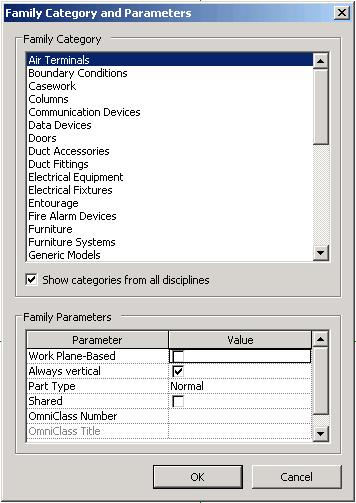

System Versus User Family Category
Here is a simple question and suggestion on classifying categories into built-in system versus user defined.
Question: Given an arbitrary element, how can I determine whether it belongs to a system family as opposed to a user-defined family? I thought I might look at its category, but how can I see whether that is system-defined? For example, I see that a duct has a category id of -2008000. Can I depend on the fact that this category id value is negative? Or is there any other way to determine this?
Answer: There is currently no API method to distinguish system categories from user defined ones short of creating your own hardcoded list. All built-in categories have negative values, but this includes system family types, family types, and subcategories of each, so that will not help you resolve this issue.
How could such a list be created?
Unfortunately, that would have to be done manually. This Family Category and Parameters dialogue lists all the family based categories:

If the category is a top level category and not in this list, then it is probably a system family category.